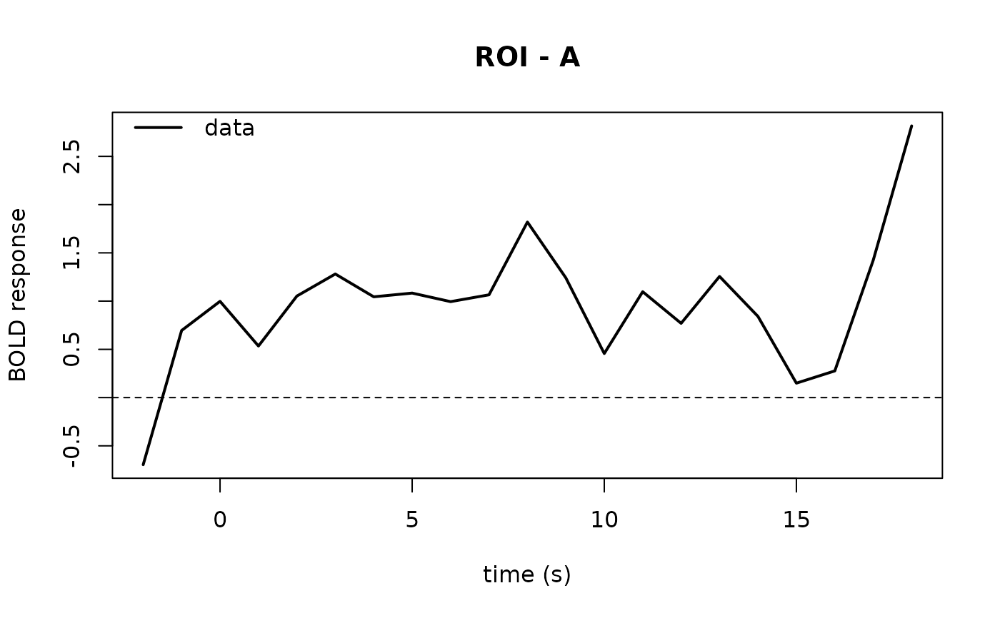

This function plots average BOLD response around specified events for a single ROI
by using FIR based event estimation, all event_types in events are taken into account in the FIR.
Posterior predictives can be overlaid via the post_predict argument.
Usage
plot_fmri(
timeseries,
post_predict = NULL,
events,
event_type,
high_pass = TRUE,
high_pass_model = "cosine",
posterior_args = list(),
legend_pos = "topleft",
layout = NA,
n_cores = 1,
...
)Arguments
- timeseries
A data frame with columns 'subjects', 'run', 'time', and one ROI measurement column.
- post_predict
Optional posterior predictive samples data frame (not shown in examples).
- events
A data frame with columns 'subjects', 'run', 'onset', 'duration', 'event_type', and 'modulation'.
- event_type
Character string specifying which
event_typeineventsto plot.- high_pass
Logical indicating whether to apply high-pass filtering. Alternatively, specifying 'add' adds the regressors to the design matrix in the FIR. The choice here should be the same as the choice for
convolve_design_matrix- high_pass_model
Character indicating which type of high-pass filtering to apply ('cosine', 'poly')
- posterior_args
Named list of graphical parameters for posterior predictive lines.
- legend_pos
Position of the legend. Default: "topleft".
- layout
Panel layout matrix for multiple modulation groups. NULL leaves current layout
- n_cores
Number of cores to calculate FIR across subjects with.
- ...
Additional graphical parameters passed to plotting functions (e.g., col, lwd, lty).
Examples
ts <- data.frame(
subjects = rep(1, 100),
run = rep(1, 100),
time = seq(0, 99),
ROI = rnorm(100)
)
events <- data.frame(
subjects = rep(1, 5),
run = rep(1, 5),
onset = c(10, 30, 50, 70, 90),
event_type = rep("A", 5),
modulation = rep(1, 5),
duration = rep(0.5, 5)
)
plot_fmri(ts, events = events, event_type = "A")
